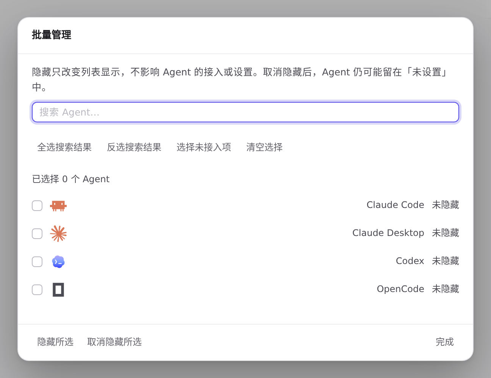
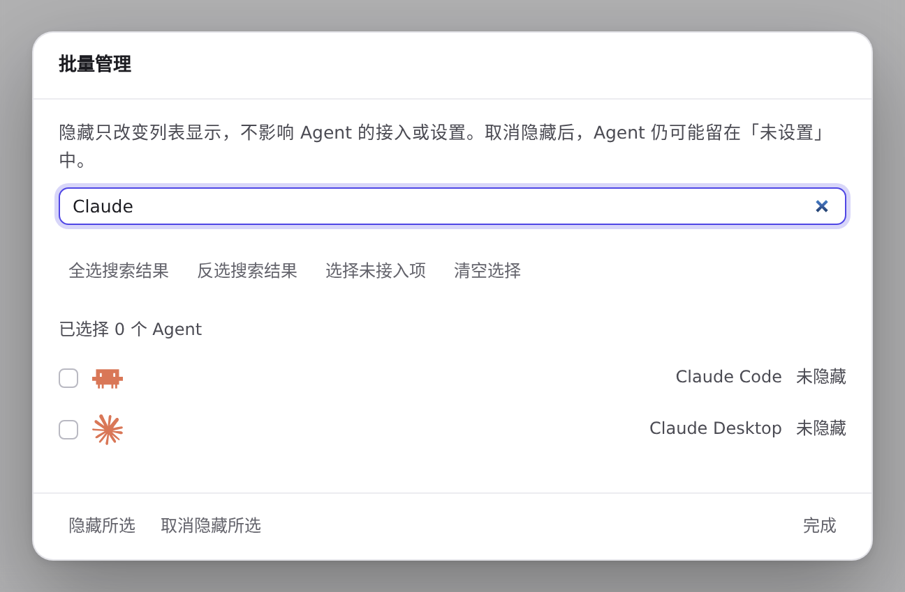
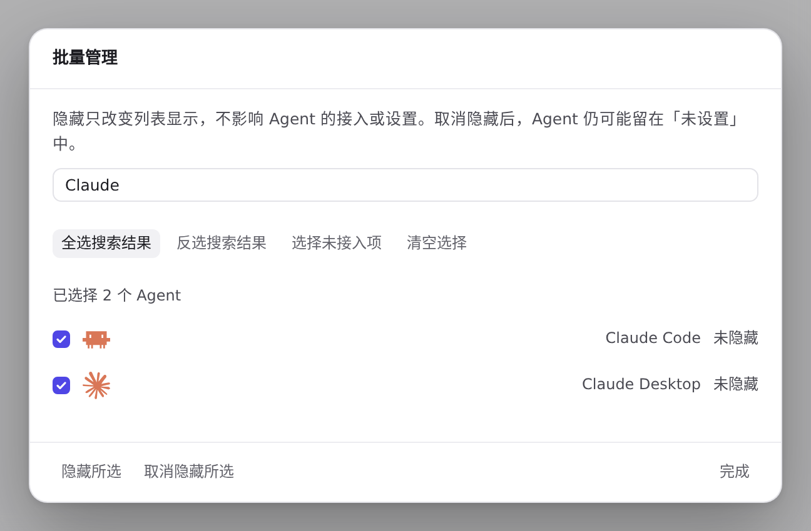
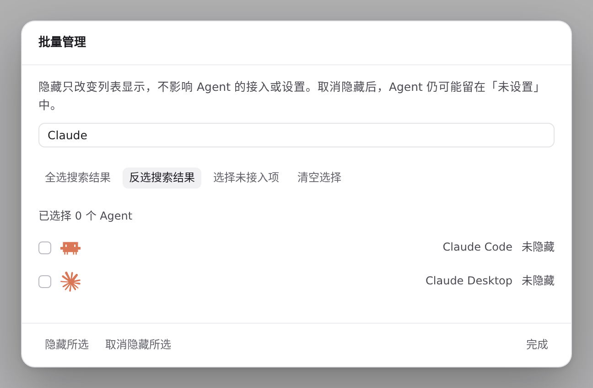
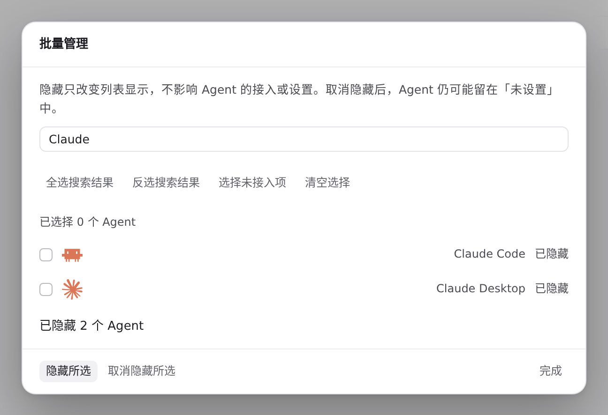
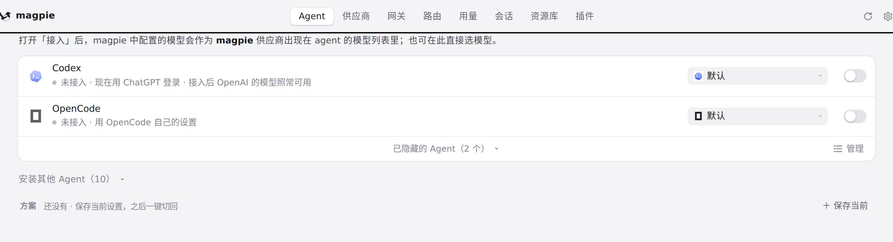
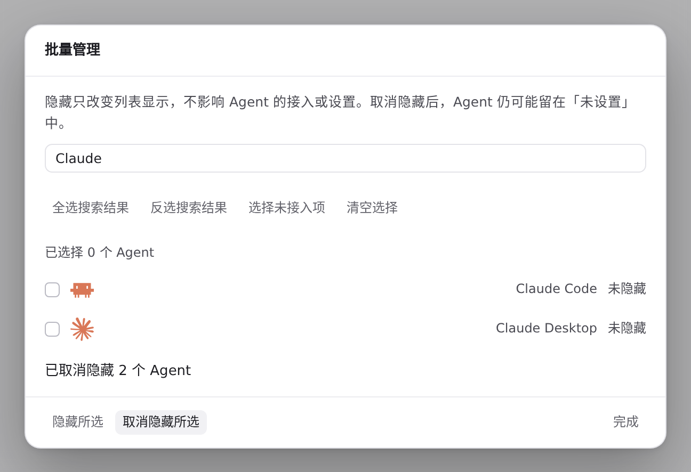

#1302 界面预览
commit 5b248f7 · 回到 PR · 在 Agent 列表页脚新增「管理」按钮（与折叠控件同排），打开可搜索、全选/反选搜索结果、选择未接入项、清空选择的批量管理对话框，并批量「隐藏所选 / 取消隐藏所选」；保存期间禁用对话框内的操作并阻止用 Escape 或背景关掉它。
红线是鼠标走过的轨迹，红色圆环是一次点击；底部文字是这一步在做什么。空格暂停，← → 逐段查看。
 打开批量管理对话框并选择 Agent · Agent 列表页脚：折叠控件旁的「管理」按钮
打开批量管理对话框并选择 Agent · Agent 列表页脚：折叠控件旁的「管理」按钮

打开批量管理对话框并选择 Agent · 批量管理对话框：搜索框、四个选择按钮、Agent 列表与底部操作

打开批量管理对话框并选择 Agent · 筛选后的 Agent 行与已选数量

打开批量管理对话框并选择 Agent · 勾选后的行、已选数量与按钮状态

打开批量管理对话框并选择 Agent · 反选后的勾选状态与已选数量

隐藏所选与取消隐藏所选 · 保存后对话框里的行状态、已选数量与结果文字

隐藏所选与取消隐藏所选 · 关闭对话框后的 Agent 列表与页脚

隐藏所选与取消隐藏所选 · 「取消隐藏所选」保存后的行状态与结果文字